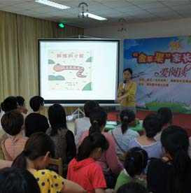
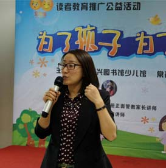
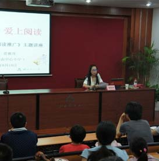

-

“爱阅读”
华东师范大学出版社学前教育事业部浙江分部的培训主任—乐乐老师以《爱阅读》为主题，围绕三个方面进行了详细讲解：
１.亲子共读对于儿童的价值
２.如何为孩子选书
３.如何与孩子进行互动式的亲子共读。
-
“绘本之后我们读什么——给孩子一个完整的心灵图书谱”早期阅读指导讲座
少儿馆家长俱乐部为庆祝世界读书日,举办了一场阅读指导讲座《绘本之后我们读什么——给孩子一个完整的心灵图谱》。主讲人蒋瑞龙老师，一位关心儿童阅读的语文老师与家长分享好绘本、好故事、好电影，提醒家长要了解儿童心理学，走进孩子的宇宙，重新成为曾经的那个孩子。
-

爱上阅读——儿童课外阅读推广主题讲座
“亲近母语 爱上阅读”读者教育推广公益活动，在绍兴图书馆一楼学术厅举行。活动以“在诵读经典，阅读名著的过程中，体验阅读的快乐，感受母语的温暖！”为主题，并邀请了绍兴市塔山中心小学裘雅萍老师来与家长们分享她的教学与育儿心得。此次活动让家长们意识到作为老师，作为家长，我们有责任把母语文化中最好的经典带给孩子们。
-

“为了孩子、为了未来”正面管教讲座
我馆组织的“为了孩子、为了未来”读者教育推广公益活动，在少儿馆一楼亲子绘本室成功举行。活动以“如何教给孩子责任心、同情、合作以及其他一些好品质”为主题，并特邀了美国正面管教协会PDA注册正面管教家长讲师（CPDPE）Amy老师，与参加活动的读者家长进行了体验式学习交流。